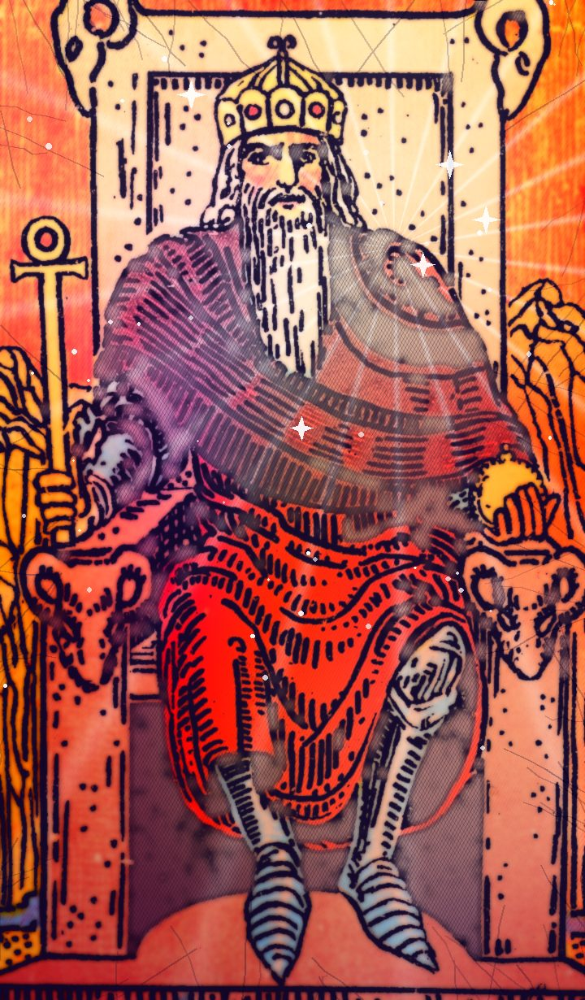

| Número | IV |
|---|---|
| Elemento / astro | Aries |
El Emperador en el tarot: significado, amor, trabajo y consejo
| Palabras clave · Al derecho | estructura, autoridad, orden, estabilidad |
|---|---|
| Palabras clave · Invertida | rigidez, control, abuso de poder |
Al derecho
Pon orden y toma el mando. El Emperador da forma a las cosas con reglas claras, disciplina y responsabilidad.
Invertida
Exceso de control o falta de él. Una figura autoritaria, o tú mismo siendo demasiado rígido.
En el amor
Estabilidad y protección; cuidado con que se convierta en control.
En el trabajo y el dinero
Liderazgo, planificación y ascensos. Trato con jefes o instituciones.
Consejo
Ordena primero, avanza después.
¿Sí o no?
Es una carta de «sí». Si sale invertida, la respuesta se suaviza a «quizás».
En pasado, presente y futuro
En el pasado: Algo de estructura ya ha marcado el camino. Mira qué aprendiste de ello.
En el presente: Ahora mismo toca estructura y autoridad. Es la energía del momento.
En el futuro: Se acerca una etapa de estabilidad. Prepárate para recibirla.
Preguntas frecuentes
¿Qué significa El Emperador en el tarot?
Pon orden y toma el mando. El Emperador da forma a las cosas con reglas claras, disciplina y responsabilidad. Ordena primero, avanza después.
¿El Emperador es sí o no?
Es una carta de «sí». Si sale invertida, la respuesta se suaviza a «quizás».
¿Qué significa El Emperador invertida?
Exceso de control o falta de él. Una figura autoritaria, o tú mismo siendo demasiado rígido.